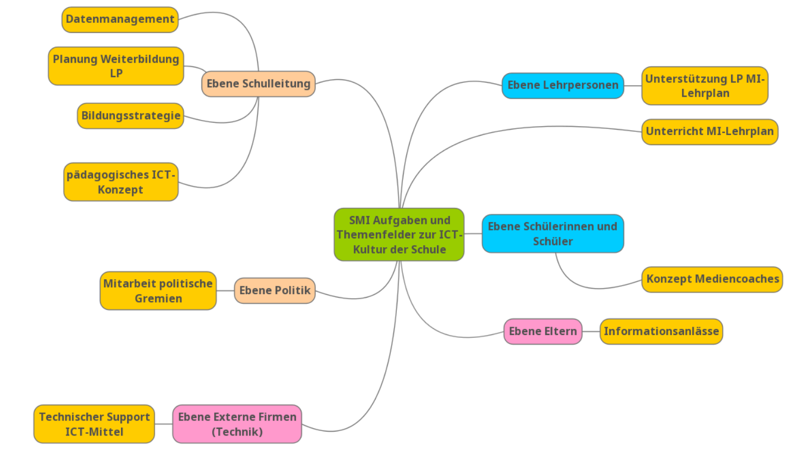

![]()
Ziele
Ziele
- Sich Kennenlernen
Studienplan 22
Querschnittsthemen
“Die Querschnittsthemen sind zusätzlich in die Lerngelegenheiten und Leistungsnachweise der Bachelormodule integriert (weitere Informationen folgen).” (PHBern, 2022, p. 14) (pdf
Ohne Fachbezug
Mit Fachbezug
Im Modul Digitalität (Master)
- Standortbestimmung Digitalität
- Medien und Informatik unterrichten
- Schule und Digitalität - heute und morgen
- Medien als Lehrperson einsetzen
Lehrplan 21
Anwendungskompetenzen
- Handhabung
- Recherche und Lernunterstützung
- Produktion und Präsentation
Medien
- Die Schülerinnen und Schüler können sich in der physischen Umwelt sowie in medialen und virtuellen Lebensräumen orientieren und sich darin entsprechend den Gesetzen, Regeln und Wertesystemen verhalten.
- Die Schülerinnen und Schüler können Medien und Medienbeiträge entschlüsseln, reflektieren und nutzen.
- Die Schülerinnen und Schüler können Gedanken, Meinungen, Erfahrungen und Wissen in Medienbeiträge umsetzen und unter Einbezug der Gesetze, Regeln und Wertesysteme auch veröffentlichen.
- Die Schülerinnen und Schüler können Medien interaktiv nutzen sowie mit anderen kommunizieren und kooperieren.
Informatik
- Die Schülerinnen und Schüler können Daten aus ihrer Umwelt darstellen, strukturieren und auswerten.
- Die Schülerinnen und Schüler können einfache Problemstellungen analysieren, mögliche Lösungsverfahren beschreiben und in Programmen umsetzen.
- Die Schülerinnen und Schüler verstehen Aufbau und Funktionsweise von informationsverarbeitenden Systemen und können Konzepte der sicheren Datenverarbeitung anwenden.
Praxis
SMI

Praktikas mit M&I
Medienbildung im Fach
Relevante Konzepte
Dagstuhldreieck

TPACK

Matthew Koehler, CC0, via Wikimedia Commons
{kind=link}
Bibliographie
Erziehungsdirektion des Kantons Bern. (2018). Pflichtenheft Spezialistin/Spezialist Medien und Informatik (SMI) an den Volksschulen des Kantons Bern Empfehlungen an die Gemeinden und an die Schulleitungen. https://www.lp-sl.bkd.be.ch/content/dam/lp-sl_bkd/dokumente/de/startseite/themen/medien-und-informatik/spezialist-medien-und-informatik/sl-lp-medien-informatik-pflichtenheft-smi-d.pdf
Huwer, J., Irion, T., Kuntze, S., Schaal, S., & Thyssen, C. (2019). Von TPaCK zu DPaCK. Digitalisierung im Unterricht erfordert mehr als technisches Wissen. MNU Journal, 72(5), 358–364.
Koehler, M. J., Mishra, P., & Cain, W. (2013). What is Technological Pedagogical Content Knowledge (TPACK)? Journal of Education, 193(3), 13–19. https://doi.org/10.1177/002205741319300303
Shulman, L. S. (2013). Those who Understand: Knowledge Growth in Teaching. Journal of Education, 193(3), 1–11. https://doi.org/10.1177/002205741319300302
Wiederverwendung
Zitat
Bitte zitieren Sie diese Arbeit als:
Conrardy, R., & Conrardy, R. (2024, May 7). Medien und
Informatik. University of Teacher Education Bern. https://phbern-rconrardy.github.io/lerngelegenheiten/